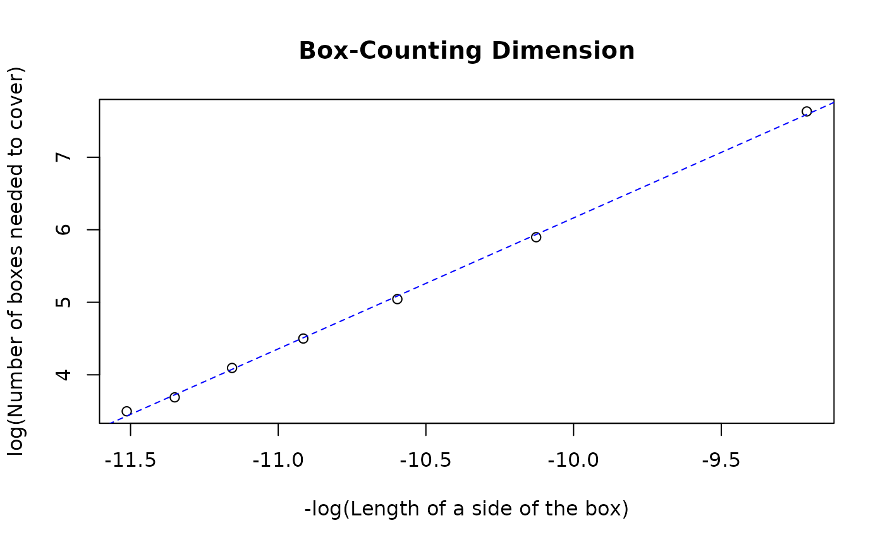

Calculates the self-similar or self-affine fractal dimension. If argument `l` is a numeric vector, self-similarity is calculated. If it is a matrix, then self-affinity is calculated and returns the global self-affine fractal dimension. If `affine_local` is set to `TRUE`, then global and local self-affine fractal dimensions are returned.
Arguments
- k
Spatial Vector data as an `sf` object
- l
Numeric or matrix; represents sequence of cell side lengths that will be used to generate the grid. Numeric value represents the length of a side of a single square box of the grid to calculate self-similarity; matrix columns represents the length and width of rectangular cells for calculating self-affinity.
- plot
Logical; if true, a log-log plot of the number of cells used to cover the polygon vs the cell size will be plotted
- ...
Arguments `anisotropy` and `affine_local` passed on to `bcd.self_affinity()`
- anisotropy
Ratio of directional scaling exponents `v_x/v_y` (`v_x > v_y`) beyond which the feature will be considered to exhibit self-affinity
- affine_local
Whether local self-affine fractal dimension is to be calculated
Examples
import_SVD(rnaturalearth::ne_countries(scale = "medium", country = "Nepal", returnclass = "sf")) |> bcd(l = seq(10000, 100000, 15000), plot = TRUE)
#> Note: Coordinates in Lat/Long; reprojecting to EPSG:3857...
#> Generating grids...
#> Counting intersecting cells...
#> Performing simple linear regression to determine Box-Counting dimension...
#> Plotting requested...

#> Plotting best-fit line...
#> [1] 1.806035
rnaturalearth::ne_countries(scale = "medium", country = "Ukraine", returnclass = "sf") |> import_SVD() |> bcd(l = matrix(rep(seq(10000, 100000, 10000), 2), ncol = 2), affine_local = TRUE, plot = TRUE)
#> Note: Coordinates in Lat/Long; reprojecting to EPSG:3857...
#> Generating grids...
#> Counting intersecting cells...
#> Generating grids...
#> Counting intersecting cells...
#> Performing simple linear regression to determine Box-Counting dimension...
#> Performing simple linear regression to determine Box-Counting dimension...
#> Plotting requested...
#> Plotting best-fit line...
#> Plotting requested...
#> Plotting best-fit line...
#> v_x = 0.955378247371206
#> v_y = 0.940200520145213
#> Important Note!
#> Anisotropy calculated to be 1.01614307469608 . The feature doesn't seem to exhibit self-affinity. Local and global self-affine fractal dimensions may not be reliable!
#> [1] 1.047460 1.062592